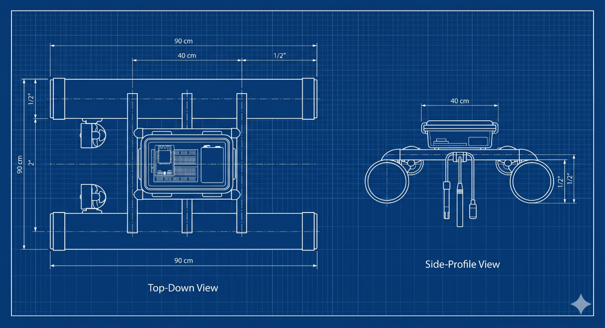

1
ค่าเฉลี่ยความขุ่น
78 NTUSMA(8) · เกณฑ์ 50 NTU
78 > 50 ผ่าน ABSOLUTE ONLY · mean = 50 ไม่ผ่านโหมดนี้; combined ยังอาจผ่าน baseline
SMART WATER BOAT · LEARN
ดูข้อมูล เส้นทาง การสื่อสาร และเงื่อนไขกลับบ้านผ่านภาพสั้น ๆ
ภาพเคลื่อนไหวเป็น storyboard ตัวอย่าง · ไม่เชื่อมกับเรือหรือ OPERATE · เวลาเป็น EXAMPLE ไม่ใช่นาฬิกาจริง
01 · OVERVIEW
ภาพสรุปเชิงสอน · ไม่ใช่ข้อมูลสดจากเรือ
78 NTUSMA(8) · เกณฑ์ 50 NTU
78 > 50 ผ่าน ABSOLUTE ONLY · mean = 50 ไม่ผ่านโหมดนี้; combined ยังอาจผ่าน baseline
East = r · cos θ · North = r · sin θ (SVG กลับทิศ y) · จบแล้วใช้ GRID index เดิม
แสดงทิศทางจาก source excerpts · ไม่ยืนยัน dashboard หรือการส่ง packet
เงื่อนไขระยะหยุดมอเตอร์กับการจบภารกิจเป็นคนละเงื่อนไข · dwell สะดุดแล้วเริ่มนับใหม่
02 · PID / HEADING
มุมเป้า → error → คำสั่งสองฝั่ง → วัดใหม่
355° → 5° = +10° · ตัวอย่างสมมติ ไม่ใช่ compass log
Perror ตอนนี้
Iสะสม error
Dการเปลี่ยน error
SPIRAL / RTH · HeadingController PID
D ตอบต่อการเปลี่ยนของ heading error
GRID · TURN → CAPTURE → TRACK
PI(error) − Kd × compass rate · ไม่ได้ใช้ D บน error แบบเดียวกัน
base + u / base − u เป็นคำสั่ง PWM สองฝั่ง · ไม่ใช่แรงขับที่วัดจริง
TRACE · HeadingController.cpp · GridCaptureController.cpp · Tasks.cpp
OPERATE / Mission simulation
เรือผ่าน WP1 แล้วเดินต่อบนแนว GRID; เมื่อพบ anomaly และไม่มี safety stop จึงค่อยเข้า SPIRAL จาก GPS fix ปัจจุบัน
คำถามชวนดูทำไมเรือไม่เริ่มก้นหอยที่ WP1 ทันที?
รอยทางแสดงเฉพาะ GRID · ช่วง RTH เรือมุ่งตรงตาม bearing ไป HOME โดยซ่อนเส้นเชื่อม · วง 4 m เป็นภาพประกอบ ไม่ใช่มาตราส่วนจริง
ใช้ความขุ่นที่ valid ครบ 8 ตัวอย่าง (SMA) แล้วตรวจค่าเฉลี่ย > 50 NTU หรือค่าเฉลี่ย > 10 NTU และสูงกว่า baseline > 10 NTU ต่อเนื่อง 4 วินาที ค่า ROC ใช้ประกอบการวิเคราะห์ แต่ไม่ trigger เพียงลำพัง pH และอุณหภูมิไม่ได้สั่งก้นหอยอัตโนมัติ
Mission FSM จะเข้า SPIRAL ได้เมื่อยังอยู่ใน GRID_PATROL และ Navigator ผ่าน waypoint แรกแล้ว (index ≥ 1; ฉากนี้คือ WP1) โดยยังต้องไม่มี safety stop ขวาง
ล็อก GPS ตอนเข้าโหมดเป็นศูนย์กลาง ใช้ r = 4 + bθ โดย b = (8 − 4) / 6π เพิ่ม θ ทีละ π/4 หรือ 45° จนถึง 6π รวม 25 เป้าหมาย เริ่มที่รัศมี 4 m ทางตะวันออก แล้วหมุนทวนเข็มนาฬิกาในพิกัด East/North ขยายถึง 8 m ครบ 3 รอบ ในภาพจะแยกสร้างเป้าหมายออกจากการเดินทางไปจุดนั้น
East = r cos θ และ North = r sin θ ก่อนแปลงเป็น latitude / longitude หน้า mockup ใช้ 10 px ต่อเมตรเฉพาะภาพก้นหอย ไม่ใช่มาตราส่วนแผนที่จริง
ใช้ LOS จากจุดก่อนหน้าไปจุดเป้าหมาย และ heading PID ช่วยปรับทรัสเตอร์ ผ่านจุดเมื่อถึงในรัศมี 2 m พร้อมคืบหน้าอย่างน้อย 0.5 m หรือผ่านปลายเส้น LOS แล้ว หากค้างจุดเดิม 45 วินาทีจะข้ามจุดนั้น
ภาพจำลองนี้แสดงการไปถึงจุดครบตามปกติ ใช้เส้นเชื่อมเป้าหมาย ไม่จำลองพลศาสตร์เรือ GPS noise หรือผลของ PID
จบเมื่อไม่มีเป้าหมายใหม่ หรือหมดเวลา 240 วินาที ก้นหอยอัตโนมัติออกก่อนครบได้หากสัญญาณ anomaly หายต่อเนื่อง 8 วินาที (กรณี FORCE_SPIRAL ไม่ใช้เงื่อนไขนี้) E-stop / GPS fault / safety stop มีลำดับความสำคัญสูงกว่า และคำสั่งกลับบ้านหรือแบตเตอรี่ต่ำเปลี่ยนเป็น RTH ได้
จบอัตโนมัติแล้วตั้ง cooldown 10 นาที กลับ GRID ตาม index เดิม ไม่เลือกจุดใกล้ที่สุด ในฉากนี้แสดงการเดินครบ 3 รอบ ส่วนทางออกอื่นอธิบายไว้เพื่อให้เข้าใจเงื่อนไข
เมื่อ GRID ครบและมีการตั้ง HOME แล้ว FSM เข้า STATE_RTH ระหว่างทางเรือคำนวณ bearing โดยตรงจาก GPS ปัจจุบันไปยังพิกัด SET_HOME แล้วใช้ HeadingController ปรับทิศ ไม่ย้อนตาม WP1–WP9 เมื่อระยะถึง HOME ≤ 4 m จะสั่ง PWM ซ้าย/ขวาเป็นศูนย์
การจบ RTH เป็นคนละเงื่อนไข: HOME ต้องตั้งไว้และ GPS fix valid, RTH ต้องเริ่มนอกวง 4 m, เรือเคยออกห่าง HOME ≥ 12 m ต่อเนื่อง 2 s แล้วกลับมาอยู่ในวง ≤ 4 m ต่อเนื่อง 3 s ภาพนี้ย่อเวลาและใช้เส้นทาง schematic; ไม่จำลอง GPS/เข็มทิศคลาดเคลื่อน การเลี้ยวจริง หรือแรงน้ำ
อ่านจาก src/detection/WaterAnomalyMonitor.cpp, src/navigation/SpiralPlanner.cpp, src/core/MissionFsm.cpp, src/core/Tasks.cpp และ include/config.h · การตรวจน้ำในภาพย่อเป็นจุดสาธิต; โค้ดจริงติดตามระหว่าง GRID/SPIRAL และมีรอบหยุดตรวจทุก 2 waypoint (พัก 3 s + วัด 5 s)
GRID_PATROL: if SMA(8) > 50 NTU or baseline condition, and passedFirstWaypoint and safety allows → SPIRAL_MAPPING
SPIRAL_MAPPING: θ = 0..6π step π/4; r = 4 + (8 − 4) × θ / 6π; generate target, then navigate; complete → resume GRID index
STATE_RTH: bearing = current GPS → SET_HOME; distance ≤ 4 m → PWM = 0; departure and arrival gates pass → STANDBYฉบับย่อนี้เป็นคำอธิบาย ไม่ใช่ source ที่คอมไพล์ได้ · จุดอ้างอิง: WaterAnomalyMonitor.cpp (SMA/trigger), MissionFsm.cpp (transition/gate), SpiralPlanner.cpp (nextSpiralPoint), Tasks.cpp (GPS fix/RTH motor action), config.h (thresholds/radii/timing)
ตัวคำนวณนี้สาธิต initial-activation predicate แบบย่อเท่านั้น · ไม่ใช่ WaterAnomalyMonitor เต็มรูปแบบ: ไม่มี streaming buffer, EMA learning, hysteresis, cooldown, invalid/stale recovery หรือ ROC dynamics · pH/อุณหภูมิไม่ trigger spiral · ไม่เปลี่ยน SMA กราฟ เส้นทาง หรือมอเตอร์ของฉากหลัก
ใส่ตัวเลขคั่นด้วย comma หรือเว้นวรรค · ต้องครบ 8 ค่าและไม่ติดลบ
combined mode ที่ mean = 50 ยังอาจผ่าน baseline branch; ค่าความขุ่นอย่างเดียวไม่ทำให้ FSM เปลี่ยนสถานะหาก GRID/WP1/safety gate ยังไม่ผ่าน
แสดงเฉพาะเงื่อนไข departure/arrival จาก MissionFsm และการ reset เมื่อ HOME/GPS gate ขาด · สมมติว่าอยู่ STATE_RTH และ readiness อื่นผ่าน · ไม่ใช่ FSM เต็มรูปแบบหรือ GPS จริง
ระยะ ≤ 4 m คือเงื่อนไขย่อยที่ Tasks ใช้หยุดมอเตอร์ ไม่เท่ากับ arrivedHome; เวลาแต่ละ tick เป็นค่าที่ป้อนด้วยมือ ไม่ใช่เวลา firmware
แผนภาพส่วนประกอบและทิศทางข้อมูลจาก excerpts ที่ระบุ · ไม่ใช่ timing/concurrency proof และไม่อ้างการรับส่ง packet สำเร็จแน่นอน
core 1 · priority 3
สร้าง task ใน src/main.cpp:L259–260อ่าน command ผ่าน stateMutex; ส่ง StageStatusPacket และ SdLogRecord เข้าคิว
Tasks.cpp:L1344–1356, L840–842, L1319–1321core 0 · priority 2
สร้าง task ใน src/main.cpp:L261–262ส่ง stage status ทาง radio และอ่าน log queue ไป DataLogger/SD
Tasks.cpp:L1442–1447, L1577–1583อธิบายตำแหน่งผู้ใช้ในภาพรวมเท่านั้น
excerpts ชุดนี้ไม่ยืนยัน backend/dashboard wiring หรือ packet deliveryแหล่งข้อมูลคิวและ mutex: src/main.cpp:L250–253 · ownership, อัตราการทำงาน และการเชื่อมต่อ dashboard ไม่สรุปจากแผนภาพนี้
Mission flow
Decision history
End-to-end system
The boat gathers readings along a route, keeps a local log, then sends mission data through a base station for storage and review.
Temperature, pH, turbidity, GPS position and heading.
ESP32-S3 follows waypoints using GPS, compass and heading control.
ESP-NOW carries mission commands and telemetry to the base station.
FastAPI and MySQL support status, route history, alerts and heat maps.
System overview
Fixed monitoring stations report conditions at their installed positions. This boat adds mobility: it follows planned waypoints and links sensor readings with their location along the mission route.
See how waypoint planning works
Explore project details